Belleville office1610 W Main St, Belleville, IL 62220
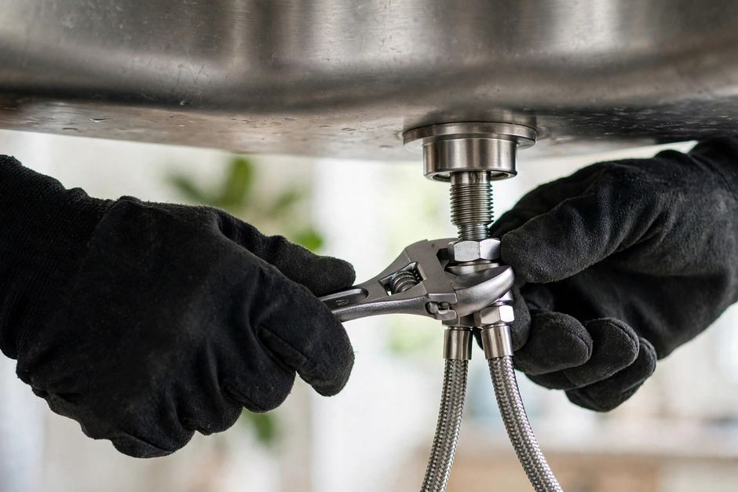
Hinkle Plumbing Company, Belleville, Illinois
Plumbing
in Belleville, Illinois
Hinkle Plumbing Company provides plumbing services in Belleville, Illinois, from its office at 1610 W Main St, Belleville, IL 62220. Work covers repairs, drains, sewers, leaks, and water heaters for homes and commercial buildings, with scope discussed by phone during office hours. Call (618) 677-6556 to describe a problem.
- Call (618) 677-6556
- Monday through Friday, 8:00 AM to 4:30 PM
- Rated 5.0 from 3 Google reviews
✓
Office hoursMon–Fri 8:00 AM–4:30 PM
Start by Phone
Call to discuss a plumbing problem
Every job starts with a phone conversation during office hours. Describe the problem, the age of the building where that detail is available, and what has changed, and the scope factors will be discussed from there. Call (618) 677-6556 Monday through Friday, 8:00 AM to 4:30 PM. Closed Saturday and Sunday.
Call(618) 677-6556
Google rating5.0 from 3 reviews
Office hoursMonday through Friday, 8:00 AM to 4:30 PM. Closed Saturday and Sunday.
ScopeResidential and commercial plumbing in Belleville, Illinois
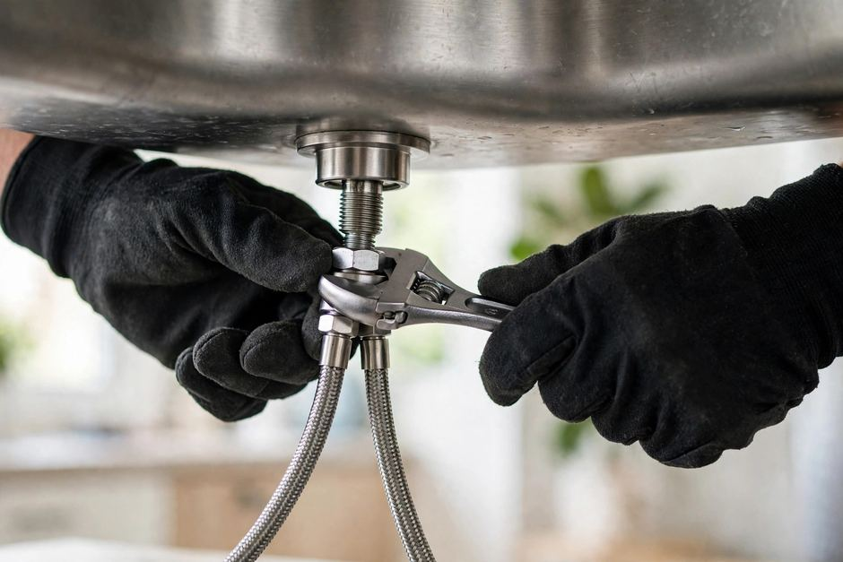

A Belleville Plumbing Company
Plumbing grounded in Belleville housing stock
Belleville homes span nearly two centuries of construction, from 1830s street houses to 2000s subdivisions. Pipe materials, lot patterns, and sewer history differ across that span, and scope follows the house rather than a template.
Hinkle Plumbing Company works from 1610 W Main St in Belleville, Illinois, serving the documented districts and subdivisions covered on this site. Much of the city's housing predates 1980, so galvanized supply lines, cast-iron drains, and clay laterals appear often, alongside copper and PEX in later homes. Camera inspection, leak detection, and material checks guide scope, and permit and review questions are raised before work begins. Readers can call (618) 677-6556 during office hours to discuss a problem.
Plumbing Services
Services for homes and commercial buildings
Thirty service pages cover the work described on this site, from urgent repairs to planned replacements. Each page states its scope plainly, with Belleville housing, sewer, and code context where it applies.
01!Urgent help
Emergency Plumbing Services
Phone help during weekday office hours for burst pipes, backups, flooding, and no hot water. Gas smells follow a leave-first, utility-first order.
Explore Emergency Plumbing Services
02↯Whole-home care
Residential Plumbing
Whole-house plumbing for Belleville homes, from pre-war brick to newer subdivisions. Findings drive scope, and older pipe materials get checked first.
Explore Residential Plumbing
03♨Business properties
Commercial Plumbing
Plumbing for workplaces and multi-unit buildings, planned around use patterns and shared systems. Fixture counts and grease loads frame the conversation.
Explore Commercial Plumbing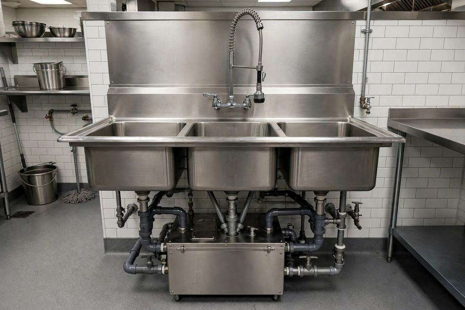
04⚑Everyday repairs
Plumbing Repairs
Everyday repairs at fixtures, valves, joints, and appliance hookups. Adjoining pipe condition shapes what gets fixed and what gets watched.
Explore Plumbing Repairs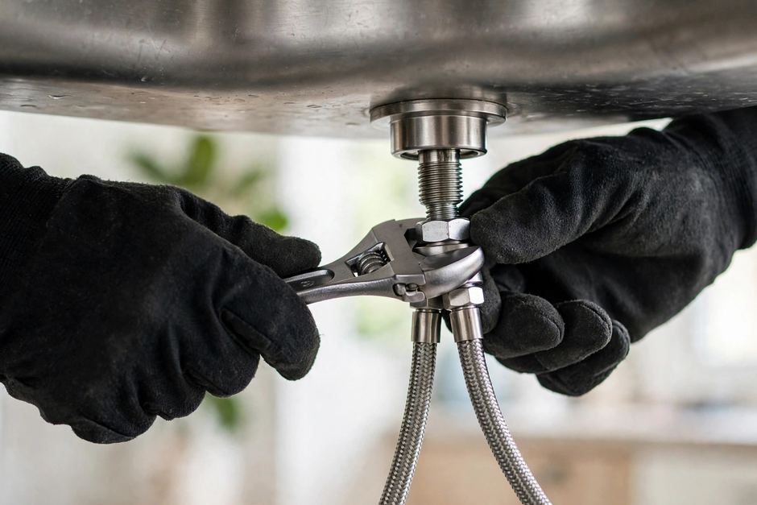
05!Clearing clogs
Drain Cleaning
Cable clearing for slow and blocked lines in kitchens, baths, laundry rooms, and mains. Lines that clog again get a camera look before the next step.
Explore Drain Cleaning
06↯Backup response
Sewer Backup
Backup calls start with what surfaced, where, and after what weather. The fix depends on whether the fault is a clog, a break, or a surcharged main.
Explore Sewer Backup
07♨See inside lines
Sewer Camera Inspection
Video evidence of what the line actually looks like inside. Recorded footage with positions helps separate spot fixes from full replacements.
Explore Sewer Camera Inspection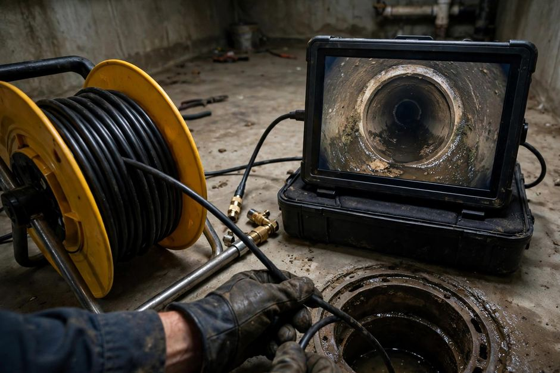
08⚑Spot repairs
Sewer Line Repair
Targeted fixes where camera footage shows one bad joint or section. Ownership and the City process for the outer portion are part of the discussion.
Explore Sewer Line Repair
09!Full replacement
Sewer Line Replacement
Complete lateral renewal when the line has no sound sections left. Depth, soil, and street work set the shape of the job.
Explore Sewer Line Replacement
10↯Less digging
Trenchless Sewer Repair
Bursting and lining options that leave driveways and trees in place when the line qualifies. The camera decides whether the method fits.
Explore Trenchless Sewer Repair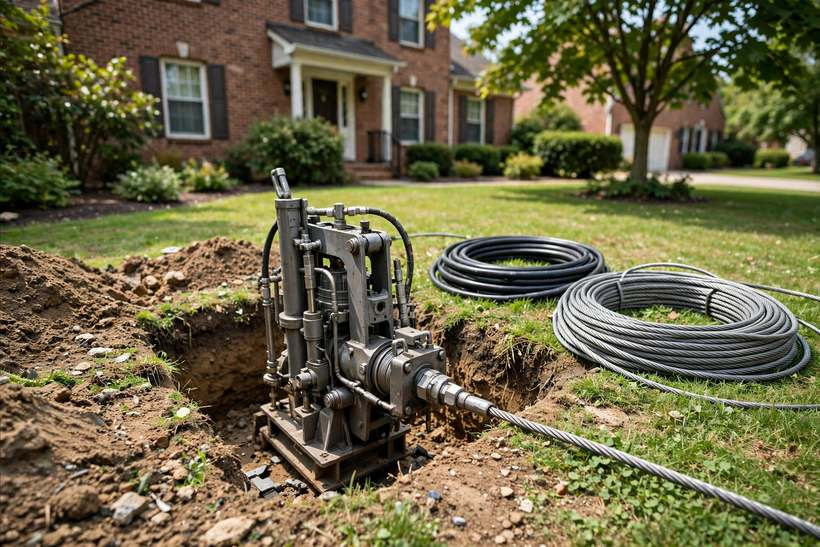
11♨Scouring lines
Hydro Jetting
Pressurized scouring for grease, scale, and root masses that cables only poke through. Used only after a camera pass confirms the line can take it.
Explore Hydro Jetting
12⚑Finding hidden leaks
Leak Detection
Finding hidden water before walls and floors come apart. Meter, sound, heat, and pressure checks narrow the search to one spot.
Explore Leak Detection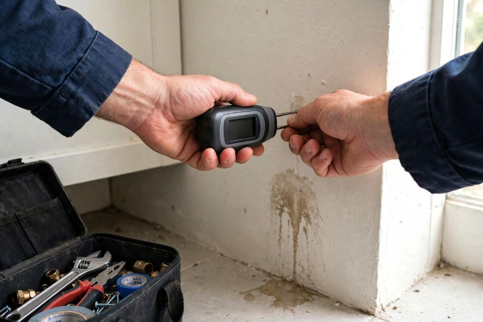
13!Fixing leaks
Leak Repair
Fixes at the joint, valve, run, or fixture where detection pointed. Nearby pipe gets weighed in, since one leak can signal wider wear.
Explore Leak Repair
14↯Under-slab leaks
Slab Leak
Water escaping beneath concrete, in basement slabs or slab-on-grade floors. Detection comes first, and repair options follow what the checks show.
Explore Slab Leak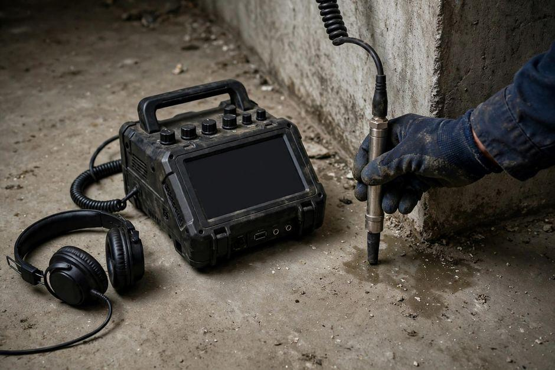
15♨New supply lines
Repiping
New supply piping through the whole house when galvanized or mixed-metal lines reach end of life. Material choice and wall patching are planned together.
Explore Repiping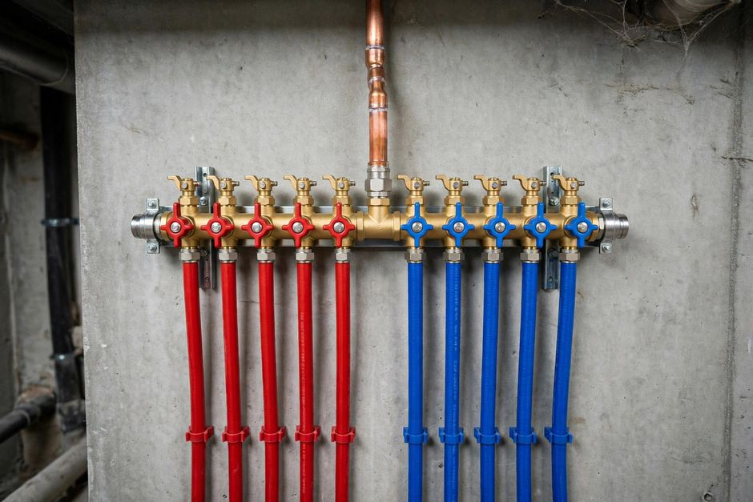
16⚑Service line work
Main Water Line Replacement
Service line renewal for leaks, corrosion, and restricted flow. The provider inventory check comes before any lead-line decision.
Explore Main Water Line Replacement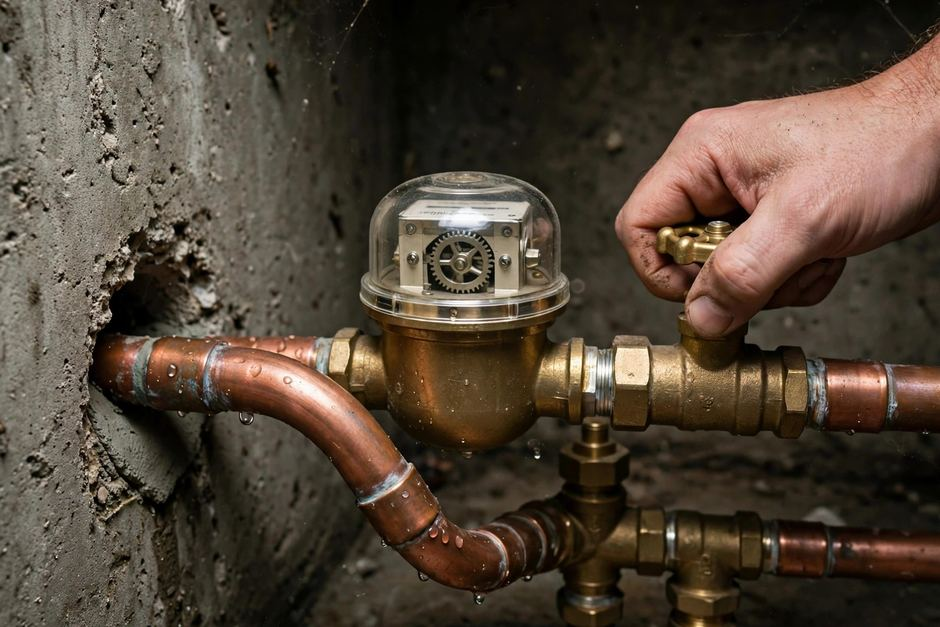
17!Repair first
Water Heater Repair
Cold showers, rumbling tanks, fitting leaks, and control faults. Tank state, venting, and age decide repair against replacement.
Explore Water Heater Repair
18↯New water heaters
Water Heater Installation
Tank swaps sized to the household, with venting, expansion, and code corrections handled as part of the job. Permits follow the City rule.
Explore Water Heater Installation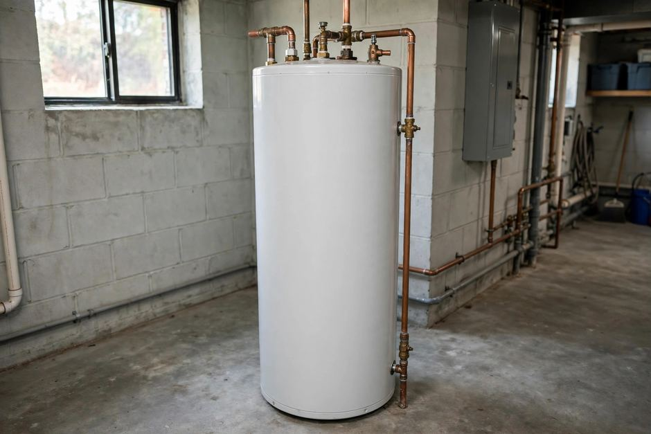
19♨Tankless systems
Tankless Water Heater Services
On-demand conversion planned around gas capacity, venting runs, and condensate handling. Descaling needs get discussed up front.
Explore Tankless Water Heater Services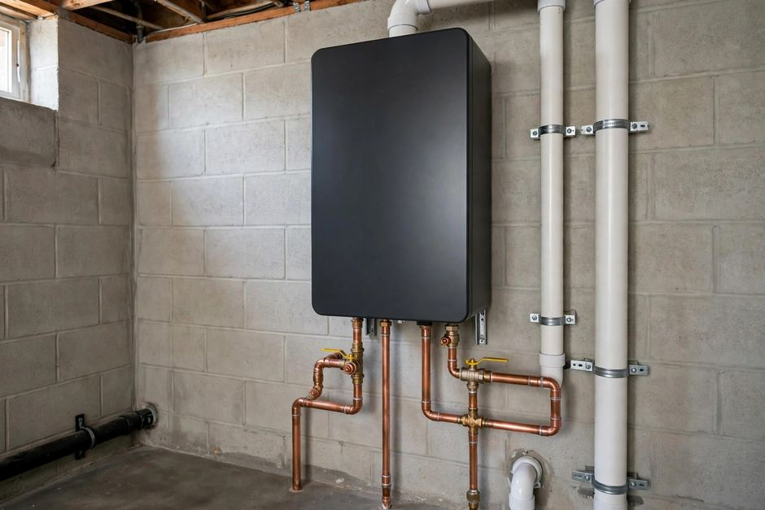
20⚑Basement cluster
Basement Plumbing
Bathrooms, ejectors, floor drains, pumps, and under-slab leaks, each diagnosed separately. Groundwater and sewer surcharge are told apart by inspection.
Explore Basement Plumbing
21!Basement protection
Sump Pump
Pumps sized to the basement, with backup power and a discharge route that keeps water away from the foundation. City discharge guidance is checked per property.
Explore Sump Pump
22↯Taste and sediment
Water Filtration
Carbon, sediment, and reverse-osmosis options for taste, odor, chlorine, and sediment. Filtration and softening are kept as separate decisions.
Explore Water Filtration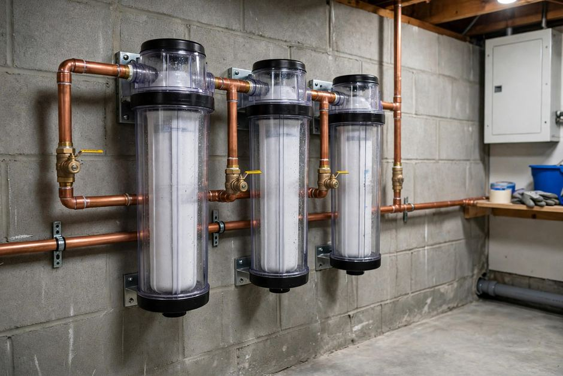
23♨Scale control
Water Softener
Ion-exchange softening explained alongside no-salt conditioning, which does not soften. Sizing starts from a tap test or utility report.
Explore Water Softener
24⚑Freeze damage
Burst and Frozen Pipe Repair
Frozen lines, splits found at thaw, and the shutoff steps in between. Exposed runs in crawl spaces and exterior walls get protection after repair.
Explore Burst and Frozen Pipe Repair
25!Toilets
Toilet Repair
Running, weak-flushing, leaking, and rocking toilets, plus seized shutoffs in older bathrooms. Direct swaps follow the City permit exception.
Explore Toilet Repair
26↯Faucets
Faucet Repair
Drips, stiff handles, and worn cartridges at kitchen, bath, and utility sinks. Seats and supply connections are checked with the cartridge.
Explore Faucet Repair
27♨Sinks
Sink Repair
Trap, drain, strainer, and supply-connection leaks, plus loose mounts and worn seals. Older supply lines get a condition check during the visit.
Explore Sink Repair28⚑Bathtubs
Bathtub Repair
Tub faucets, drains, stoppers, overflows, and seals, with access limits through finished walls factored into scope. High-water-level overflow faults get tested.
Explore Bathtub Repair
29!Showers
Shower Repair
Valves, cartridges, heads, drains, and enclosure seals. Temperature swings and standing water point to different faults and different fixes.
Explore Shower Repair
30↯Disposals
Garbage Disposal Repair
Jams, hums, leaks, and dead units under kitchen sinks. The drain and electrical connections are checked before repair-or-replace is decided.
Explore Garbage Disposal Repair
Not sure which category fits? Tell us what you see, hear, or smell and we'll route the right technician.
Describe the problemWhy Hinkle
Local context that shapes the work
Housing age, sewer history, freeze exposure, and water supply all shape plumbing scope in Belleville. The points below state what is verified and where the limits sit.
5.0Google rating from 3 reviews
How Work Proceeds
From phone call to finished work
The steps flex with the condition of the job, but the sequence stays the same.
Call during office hours
Call (618) 677-6556 Monday through Friday, 8:00 AM to 4:30 PM. Closed Saturday and Sunday. Describe the problem and what has changed.
Describe the building
Age, pipe materials where they are visible, and recent changes help frame the first checks. District or subdivision details are noted where they apply.
On-site assessment
Camera, detection, and pressure checks establish what is failing and where. Findings are shared plainly before scope is discussed.
Scope and options
Repair, partial replacement, and full replacement options are discussed with the factors that shape each one. Permit and review requirements are confirmed at this stage.
Homes and Businesses
Residential and commercial plumbing
The principles stay the same, but access, scheduling, and documentation change with the property.
Residential plumbing
Practical repairs for occupied homes.
- Repairs, leaks, drains, and fixtures
- Water heaters and water service lines
- Sewer laterals, camera inspection, and jetting
- Basements, sump pumps, and slab leaks
Commercial plumbing
Plumbing work coordinated around business operations.
- Repairs and fixture work for commercial buildings
- Drains, sewers, and camera inspection
- Water heaters and supply lines
- Work scoped to building use and code requirements
Common Problems
Problems that start with a phone call
Most calls fall into a few patterns. These are the ones that come up most often.
Burst and frozen pipes
Pipes split on freezing and leak on thawing, with crawl spaces, exterior walls, and unheated spaces most exposed. Shut-off location and thaw behavior are discussed during the call.
Sewer backup
Clay laterals, root intrusion, and combined-sewer surcharge in heavy rain all cause backups. Camera footage separates a clog from a break before scope is set.
No hot water
Tank failure, venting faults, and control faults all remove hot water without warning. Repair-or-replace scope follows tank condition and the permit rule for hot water heaters.
Leaks with no visible source
Damp patches, staining, and rising usage point toward hidden leaks. Meter checks, acoustic listening, and pressure testing narrow the location before surfaces in the house are opened.
Reviews from Google
What Customers Say on Google
★★★★★
“Very prompt and responsive, the worker was friendly and informative! Will use this company again!”
★★★★★
“Don did an outstanding job for me when I needed him and highly recommend his business”
★★★★★
“Rated 5.0 out of 5 across 3 Google reviews, all five stars.”
Service Area
Documented districts and subdivisions in Belleville
This site covers five documented areas in Belleville, Illinois: three historic districts and two planned subdivisions, each with its own page. Belleville has no official neighborhood list, so coverage follows district designations and subdivision records rather than invented names. Work elsewhere in Belleville is discussed by phone during office hours.
- Old Belleville Historic District
- Hexenbuckel Historic District
- West Belleville Historic District
- The Orchards
- Reunion
1234
Office: 1610 W Main St, Belleville, IL 62220Call (618) 677-6556 Monday through Friday, 8:00 AM to 4:30 PM. Closed Saturday and Sunday.
Work Gallery
A look at the work
Images on this site show plumbing materials, fixtures, and work settings typical of Belleville homes and commercial buildings. No customer names or job stories are published.
Prepared arrival
The visit starts with the symptom you described, so the equipment brought along matches the job.
Diagnosis first
The cause is confirmed before work begins, so the fix addresses the problem rather than the symptom.
Contained work
The work area is protected, kept tidy during the visit, and left clean when the work is done.
Tested and reviewed
The result is checked before handoff, and what was done is reviewed with you.
Questions
Questions about plumbing in Belleville
Still unsure? Our team can help identify the safest immediate step and the right appointment type.
Ask us nowWhat are the office hours?
Office hours are Monday through Friday, 8:00 AM to 4:30 PM. Closed Saturday and Sunday. Readers are invited to call (618) 677-6556 during those hours to describe a problem and discuss scope factors. No after-hours service claim is made on this site, and hours are stated on every page so a call can be planned.
Which areas of Belleville are covered?
This site covers five documented areas: the Old Belleville Historic District with the Belleville Historic District, the Hexenbuckel Historic District, West Belleville, The Orchards, and Reunion. Belleville has no official neighborhood list, so these pages follow district designations and subdivision records. Work elsewhere in Belleville is discussed by phone.
Do plumbing jobs in Belleville need a permit?
The City of Belleville requires a permit before plumbing work begins (§152.05(A)); direct replacement of a toilet, sink, faucet, or other appliance is exempt, except hot water heaters require an electrical or gas permit (§152.05(B)(3)). Permit questions for a specific job are discussed by phone during office hours, and the permit position is confirmed before work begins.
Who owns the sewer lateral, and what is the City program?
The owner owns the sewer lateral from the building to the city main, including the portion under streets, under City code §50.023. The City operates a Sewer Lateral Repair Program covering the portion beyond the property line; readers should check current City program details for terms. A camera inspection establishes where a defect sits relative to the property line.
Should a lead service line be checked?
Lead service lines are an expect-and-check question for older Belleville homes: American Community Survey 2020–2024 estimates put 47.3% of city housing before 1960. No Belleville lead-line count was found, so none is stated here. Readers should check the water provider's service-line inventory and replacement program before paying for any lead-line replacement.
Mon–Fri 8:00 AM–4:30 PM
Call Hinkle Plumbing Company
Call (618) 677-6556 Monday through Friday, 8:00 AM to 4:30 PM. Closed Saturday and Sunday. A short description of the problem and the building is enough to start the scope conversation.
Contact
Phone, address, and hours
Hinkle Plumbing Company, 1610 W Main St, Belleville, IL 62220. Call (618) 677-6556 Monday through Friday, 8:00 AM to 4:30 PM. Closed Saturday and Sunday. Contact is by phone; this site has no contact form.